This project consists of two parts, an individial assignment and a group assignment. The individual assignment was to design a parametric, pressfit model containing several units. The model has to be resizable, so the material thickness and sizes in the model can be changed using parametric variables. Description of this part can be found here below. The second part is a group project and the goal was to choose a laser cutter and calculate the kerf, this part can be accessed here
For this project I decided to use Fusion 360 and Inkscape. I have previous experience with Fusion as well as Inventor, Autocad and Solidworks, but no experience using Inkscape. The deciding factor in this was the instructors recommendation of Fusion and Inkscape for this project.
Inkscape is a free and open-source vector graphics editor used to create vector images, primarily in Scalable Vector Graphics (SVG) format. Other formats can be imported and exported. Inkscape can render primitive vector shapes (e.g. rectangles, ellipses, polygons, arcs, spirals, stars and 3D boxes) and text.
Fusion 360 is a cloud-based CAD/CAM tool for collaborative product development. Fusion 360 enables exploration and iteration on product ideas and collaboration within distributed product development team.
Inkscape
I wanted to create something that I could use at home, something functional. At first I thought a bookstand or maybe a laptop stand but in the end I decided to make a dog bowl stand. My dog recently had hip surgery and has been on my mind a lot lately. I hope this will increase his quality of life as well as stop him from throwing all his food on the floor.
I started by watching the video
Automatically sized finger-joints. I followed the tutorial and then started my project.
The next step was design the bowl stand and outline the parameters. I made a rough sketch and here below is a sketch made in fusion containing the design and parameters. I decided to keep the finger length close to 16mm.
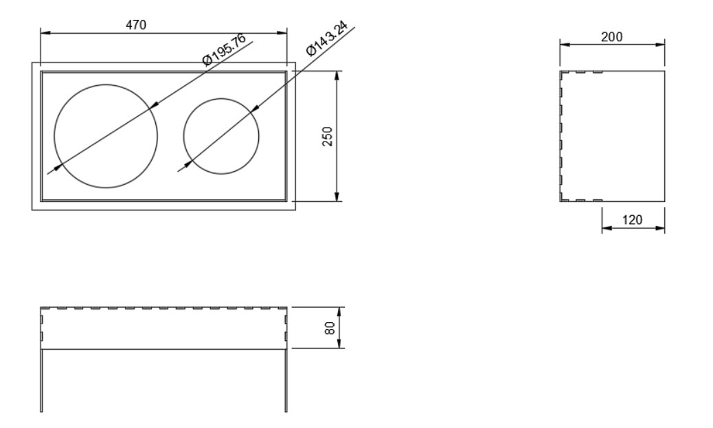
I started a new project in Fusion and added the user parameters as can be seen on the picture below.
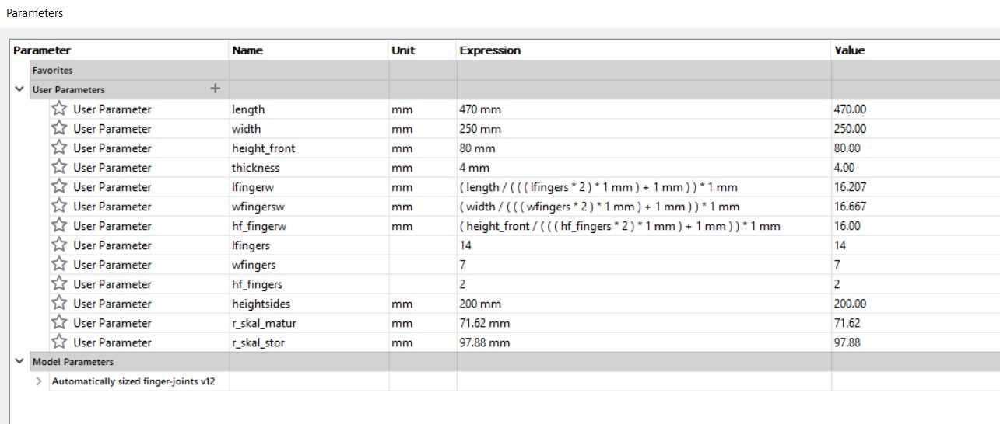
The drawing of the dog bowl stand is created in a simular way as the box in the video Automatically sized finger-joints. First I created the top panel containing circlular holes for the dog bowls. I linked all the dimensions to the parameters I created. The sketch can be seen here below.
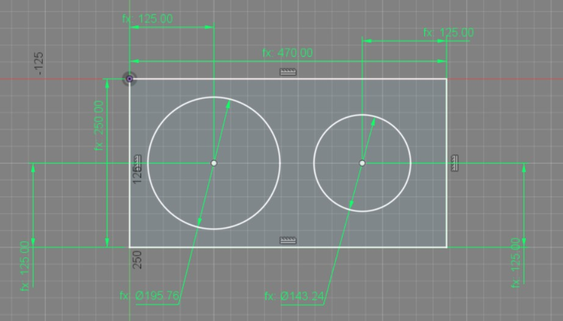
Then I extruded the sketch and created finger joints on the back of the front panel as well as the left side of the top panel. The finger joint size and amount is a user parameter that was created in the beginning.
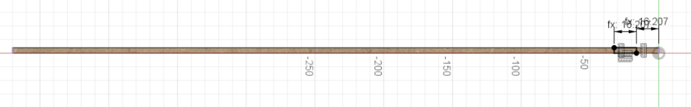
To create the finger joints a sketch was made and then extruded. Then rectangular pattern was used to replicate the finger joint.
The back side of the bowl stand was created next. The finger joints on the top of the back panel were created using combine.
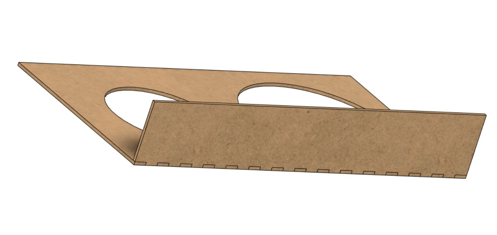
Finger joints were added to the left side of the back panel and then the command extrude was used to create a new body, the front side. The combine command is then used to create fingers joints on the top panel.
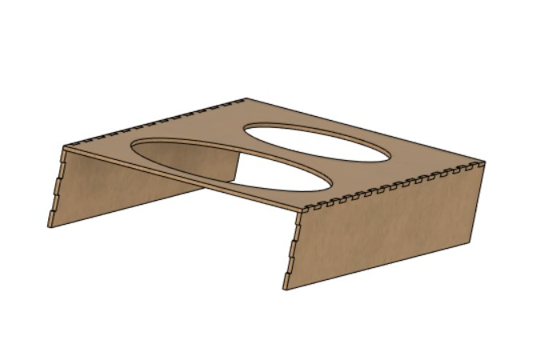
The left panel was created, and the command combine is used to create finger joints on three sides of the panel. The right side is created using the extrude command on the left panel and choosing the operation new body. Using combine the fingers joints on the right side are created.
The final step is to inscribe my dogs name on the front panel. I tried to create a parameter for the name written on the dog bowl stand but it was not possible to add a string parameter. Therefore the name has to be changed in the sketch. Initially I had planned on engraving the name on the stand but in the end I decided to cut out the name so I could later paint the bowl stand and the enscription would still be noticable.
The final sketch can be seen on the picture here below:
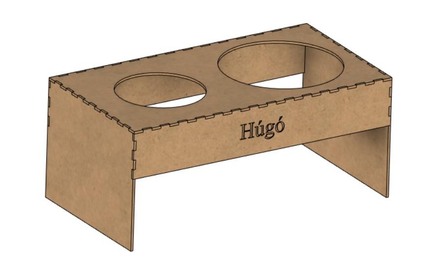
All the dimensions are linked to user parameters. But to be sure of this I changed all the parameters and saw that the design changed as I changed the parameters. When I was changing the parameters I changed the radius of the bowls and saw that when the diameter of the bowls was bigger then the width of the top panel the drawing was ruined. The first time I did this I closed the program afterwards and had many issues with the drawing when I opened it again. I then had to redeem a previous version and fix some things in the drawing again. But this is the only parameter I had issues with.
To use the drawing in the laser cutter I have to convert the file to a dxf format. I watched a video on how to do this, the video was Fusion360 - Laying out flat sheet components to prepare for CAM. In short I aligned the pieces using the command align and then created a sketch of the pieces using the command project. The maximum size of the laser cutter is 600x300mm so I arranged the pieces into boxes.
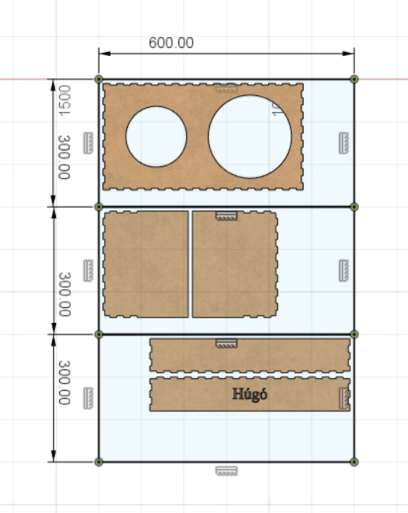
To include the calculated kerf from the group project I used the command offset to account for the material removed by the laser cutter. Then by right clicking the drawing I can choose to save the file as dfx.
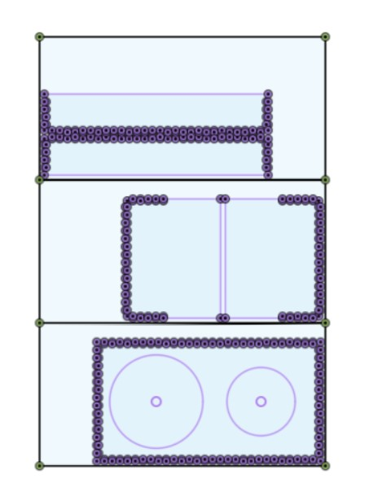
The dxf file can be opened in Inkscape and there I had to remove the original lines that were not offset. To do this I had to change the line width and then I could distinguish between the inner and outer line. Then I proceeded to delete every line that was not offset. Then the file was saved in pdf format and stored on a USB drive.
Once my design was finalized I moved on to the production phase. At Fablab I chose to use the laser printer called Rey.
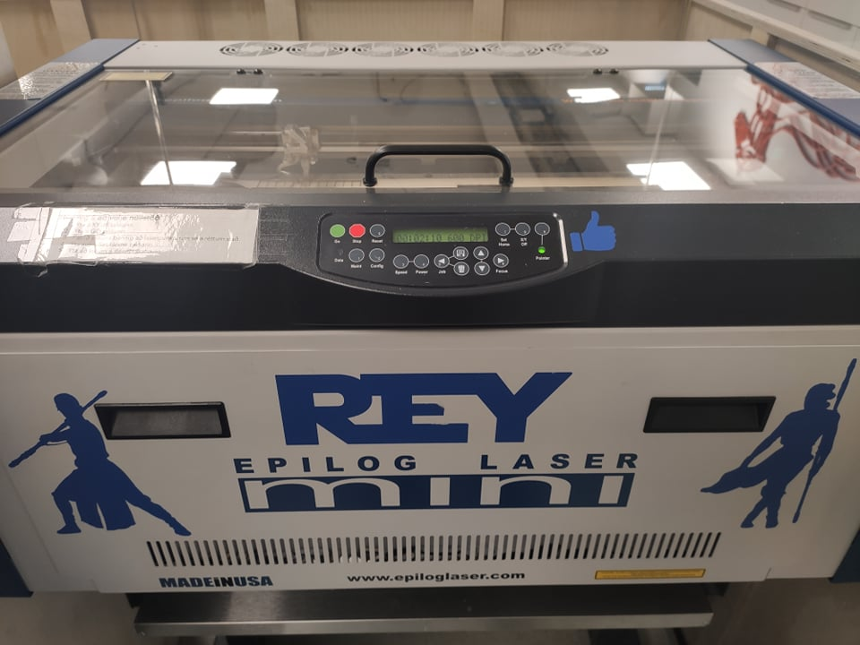
The material I choose to use was 4mm wood. To make sure the cut of the laser is clean I have to make sure the height of the laser is correct. This is done by attaching a metal piece to the laser cutter and selecting a height where the metal piece barely touches the wood. Then the home point of the laser is chosen in the top left corner of the wood.
To start cutting I opened the pdf file and choose print. There I choose the appropriate setting for the laser cutter and set the material size as 600x300mm.
Then I press print and the laser cutter will start. The result can be seen here below:
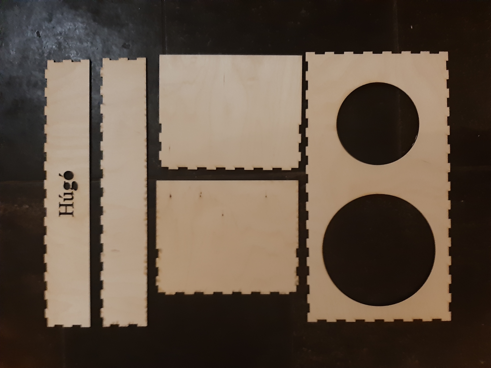
Here below the assembled final product can be seen. I had some problems assembling the dog bowl stand and I think this was due to the amount of finger-joints. This was solved by filing off some of the finger joints, only a small amount though. In the end I was quiet happy with the outcome and I even think I estimated the height correctly.
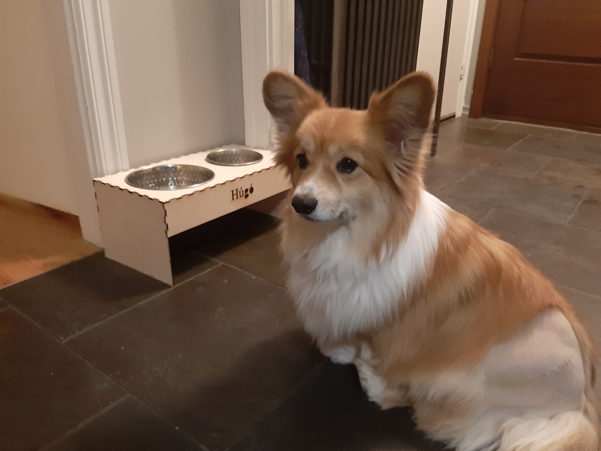
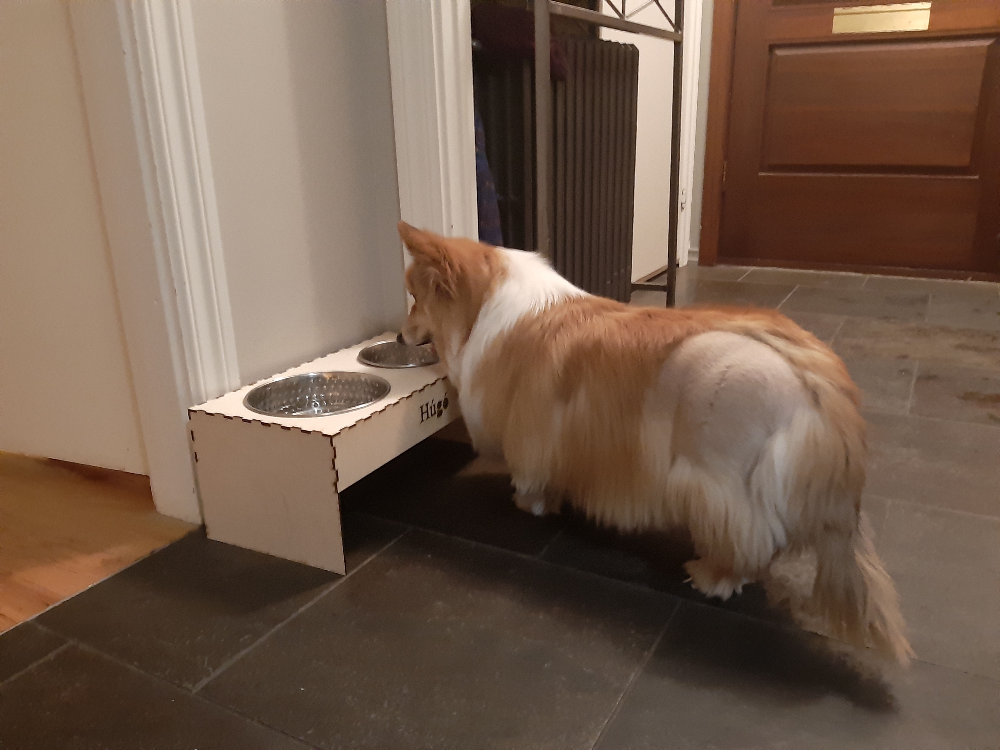
But as further tests were conducted on the design a serious flaw was revealed. My dog somehow managed to pick up his food bowl and throw it on the ground to protest lack of food.
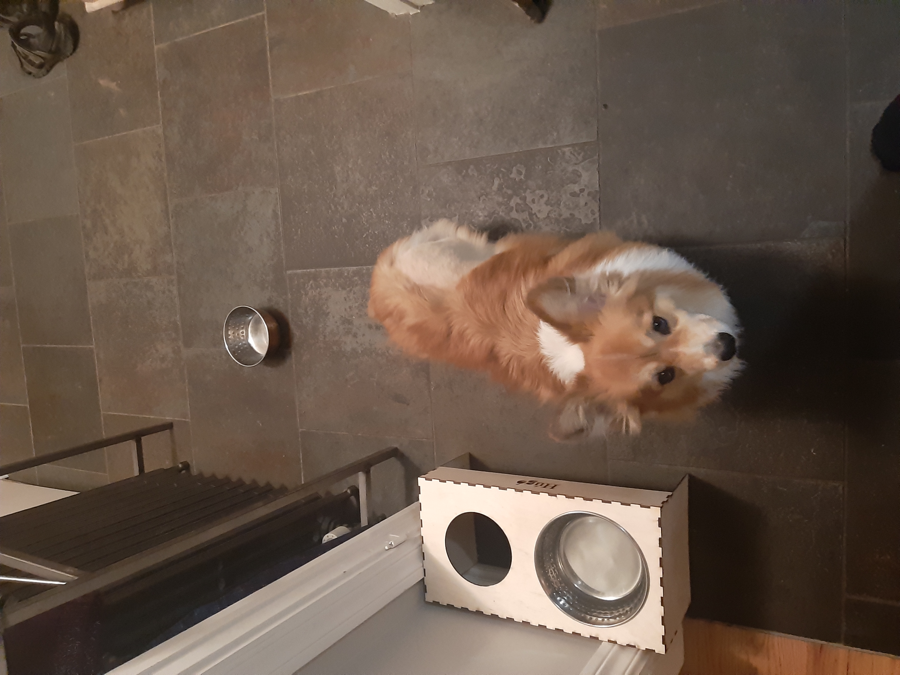
The file used for laser cutting can be found here.
The assembly of the dog bowl stand can be found here.
Design a parametric, pressfit model
Tools
How to access tools
Design
Production
Result

Workload
Part
Time
Choosing a project
1 hour
Preparation
3 hour
Measurements and determining design parmeters
1 hours
Drawing
5 hours
Production (for the individual and group project)
5 hours
Updating website
7 hours
Total
22 hour
Files
Search engine keywords
HTML5 how to create table, Pressfit design, hundaskálar, HTML5 link files, html5 w3schools